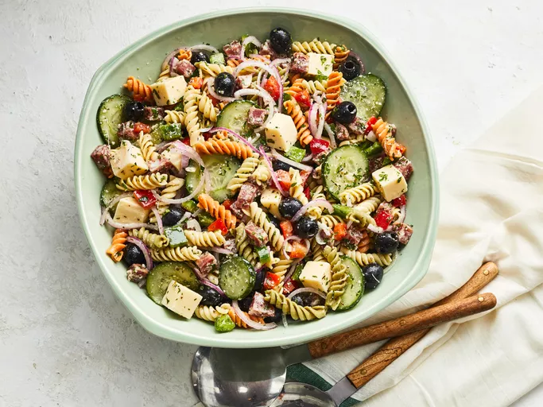

Pasta Salad

Description
A homemade Italian pasta salad dressing takes this simple pasta salad
loaded with veggies, cheese, pepperoni, and olives to a whole new level!
Serve it right away or make it ahead for packed lunches, picnics, or
summer barbecues.
Ingredients
- Pasta
- pepperoni
- Provolone Cheese and Parmesan Cheese
- Red onion
- Cucumber
- bell peppers
- olives
- Parsley
- Mix olive oil
- Vinegar
- Garlic
- Basil
- Oregano
- Ground Mustard
- Salt and pepper
Steps
-
Boil rotini in lightly salted water for 8 to 10 minutes. Drain, rinse in
cold water, then drain again. Transfer the cooked pasta to a large bowl.
Toss with pepperoni, provolone cheese, red onion, cucumber, bell
peppers, olives, parsley, and Parmesan cheese.
-
Mix olive oil, vinegar, garlic, basil, oregano, ground mustard, salt,
and pepper in a jar with a lid. Tightly seal the jar, then shake until
combined
-
Pour the dressing into the bowl with the pasta salad. Toss until
well-combined. You can serve immediately, but we recommend allowing the
pasta salad to chill in the fridge for about eight hours before serving.
This will give the flavors time to meld.